1970년대 오일쇼크 이후 석유 의존을 줄이고 에너지원을 다양하게 하려는 고민 속에서 천연가스 도입이 논의되기 시작했습니다. 여섯 시대로 나눠 주요 장면을 따라갑니다.
1983 – 1994
천연가스 시대의 첫걸음
이 시대의 장면 44개
- 1983.01한국가스공사 설립위원회 구성
- 1983.05「한국가스공사법 시행령」 공포
- 1983.07LNG생산기지 및 주배관로 건설공사 착공
- 1983.08한국 최초 LNG 도입계약 체결(Arun III LNG Trade)(한전 - 인도네시아 페르타미나사)
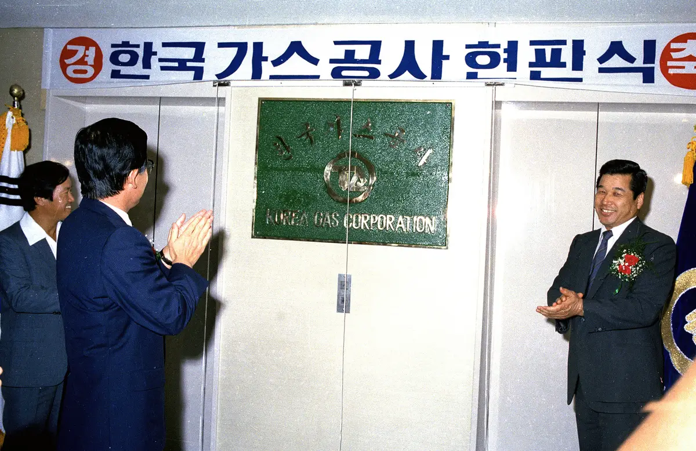
1983.08한국가스공사 설립1983년 8월 18일 설립, 현판 제막과 축하행사를 가졌다. 출범 당시 2국 3실 7부 31과에 임원 4명·직원 243명, 모두 247명이었다.- 1983.10Arun III LNG Trade 정부 승인
- 1984.02제1차 한·인니 LNG 협력위원회 주최
- 1984.03평택LNG생산기지-인천화력발전소 주배관로 공사 착공
- 1985.01LNG 냉열이용산업 추진 기본방침 결정
- 1985.08경인지사 설립
- 1985.11노동조합 창립
- 1986.05평택LNG생산기지 제1~3호 탱크 및 생산설비 건설공사 완료
- 1986.08중앙통제소 발족
- 1986.08경인 주배관로 건설공사 완공
- 1986.10국내 최초 액화천연가스(LNG) 도입
- 1986.10LNG선 Golar Spirit호 평택LNG생산기지 입항 : LNG 최초 인수
 1986.11LNG선 국내 첫 입항식평택생산기지에서 첫 LNG선 입항을 기념하는 행사가 열렸다.
1986.11LNG선 국내 첫 입항식평택생산기지에서 첫 LNG선 입항을 기념하는 행사가 열렸다.- 1986.11발전용 천연가스 공급 개시(평택화력)
- 1986.11도시가스 공급관리소 건설공사 완공
- 1986.12경인관로 천연가스 주입 개시
- 1986.12인천화력발전소 천연가스 공급 개시
- 1987.01수도권 천연가스 공급 개시
- 1987.02수도관 도시가스용 천연가스 공급 개시
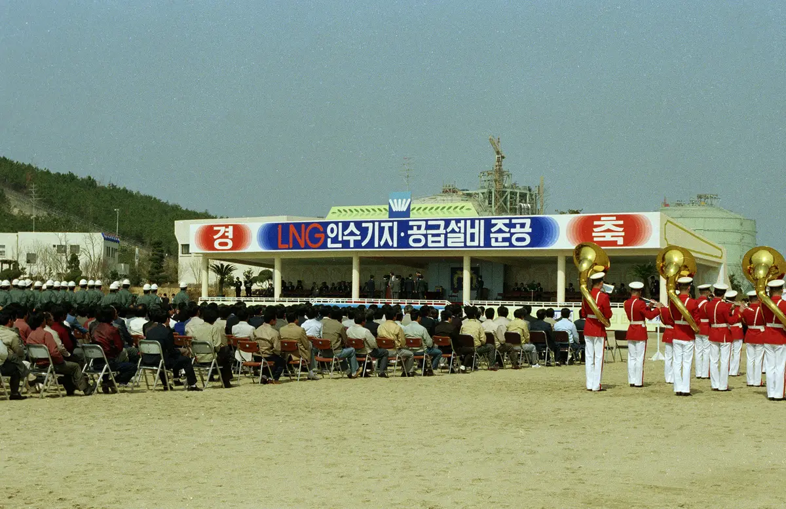
1987.04평택LNG생산기지 및 공급설비 준공평택생산기지와 공급설비가 준공되며 본격적인 천연가스 사용 시대가 열렸고, 대통령 등이 참석한 준공식이 치러졌다.- 1987.12경인관로사무소 및 중앙통제소 준공
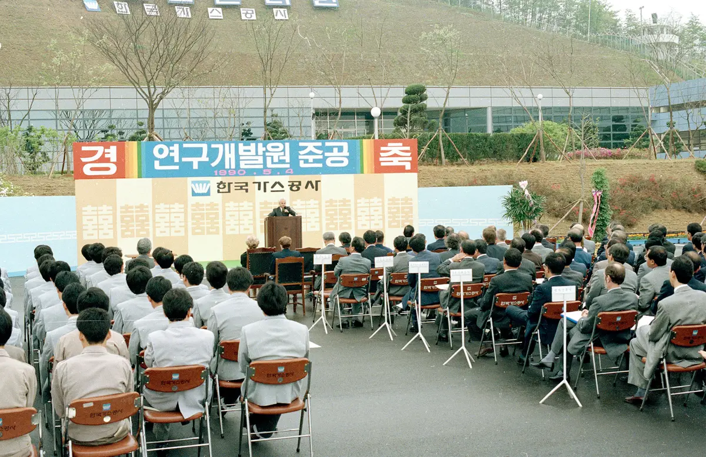
1990.05.04연구개발원(현 가스연구원) 개원천연가스 산업 육성과 기술개발을 이끌 연구기관으로 문을 열었다.- 1990.10중부권 주배관 건설공사 1·2·3공구 착공
- 1990.10신도시 가스공급설비 2·3공구 건설공사 착공
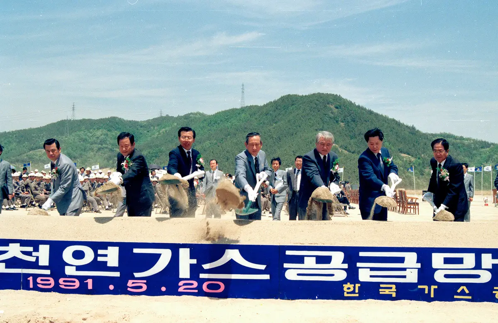
1991.05중부권 천연가스 공급망 건설 기공식대전 유성구에서 전국 공급사업의 첫 단계인 중부권 공급망 공사가 시작됐다.- 1991.06LNG 국적선 1호 건조계약 체결(현대중공업)
- 1991.09말레이시아산 LNG 첫 도입
- 1991.12서인천화력발전소 천연가스 공급개시(일도관리소)
- 1992.06영남권 주배관 건설공사 1공구 착공
- 1992.06호남권 주배관 건설공사 1공구 착공
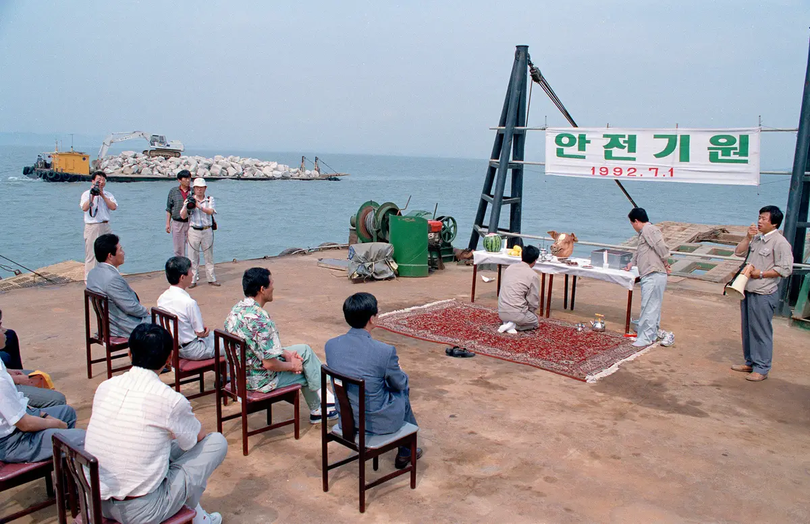
1992.07인천LNG생산기지 착공식바다 한가운데 바지선으로 사석을 투하하며 제2생산기지인 인천기지 건설이 시작됐다.- 1993.06말레이시아 MLNG사와 장기 LNG 도입계약 체결 (FOB 조건) (1995년부터 향후 15년간 연간 200만 ton 도입)
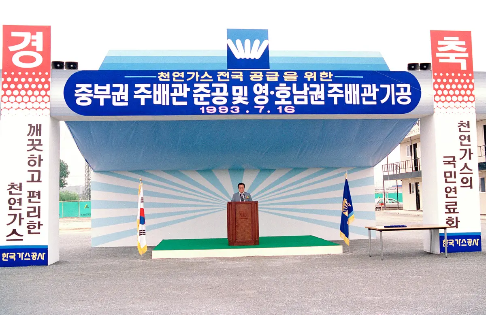
1993.07중부권 주배관 건설공사 준공 및 영·호남권주배관 건설공사 기공식 - 중부권 천연가스 공급 개시(대전, 천안, 청주)중부권 주배관이 준공됐고, 이어 영·호남권 주배관 공사가 시작됐다.- 1993.12호주산 LNG 최초 입항 기념식
- 1994.02브루나이산 LNG 최초 입항 기념식
- 1994.06LNG 수송 국적선 취항
- 1994.06브루나이와 LNG 장기 도입계약 체결
- 1994.06싱가포르지사 설립
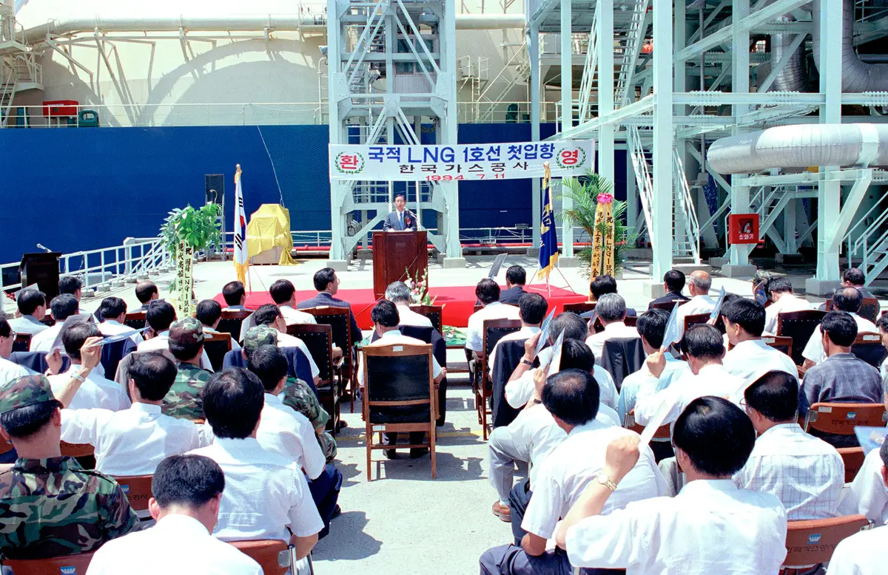
1994.07제1호 국적 LNG선(현대 유토피아호) 평택 입항제1호 국적 LNG선 현대 유토피아호가 평택 LNG 터미널에 들어왔다.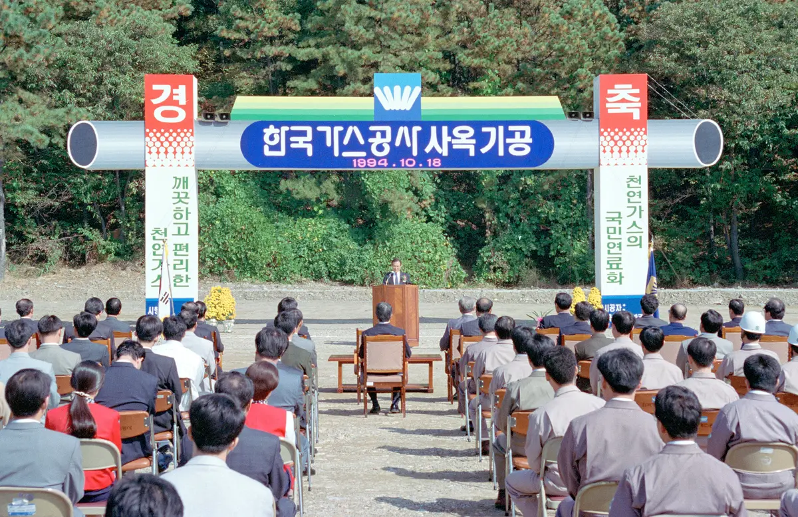
1994.10분당 사옥 기공식여의도 전경련회관(1983), 대치동 해성빌딩(1990)을 거쳐 1994년 10월 경기도 성남시 분당에서 사옥 기공식을 가졌다.
1995 – 2003
전국으로 뻗어 가는 공급망
이 시대의 장면 46개
- 1995.07대구지사 발족(대구경북지역본부 전신)
- 1995.09이중효용 흡수식 냉온수기 특허등록(92-023743호)
- 1995.10카타르 RAS LAFFAN사와 장기 LNG 도입계약 체결
- 1995.11영남권·호남권 천연가서 공급 개시
- 1995.11남부권 주배관 건설공사 기공식
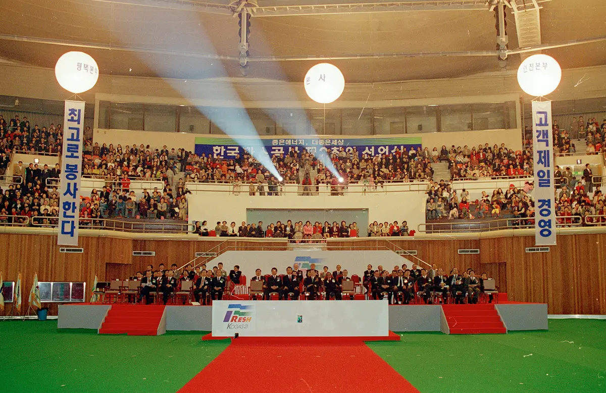
1996.03제2창업 선언식(제1기 경영혁신)경영혁신으로 21세기 세계 일류 종합에너지기업이 되겠다며 제2창업을 선언했다.- 1996.10서해권 주배관망 건설공사 기공식
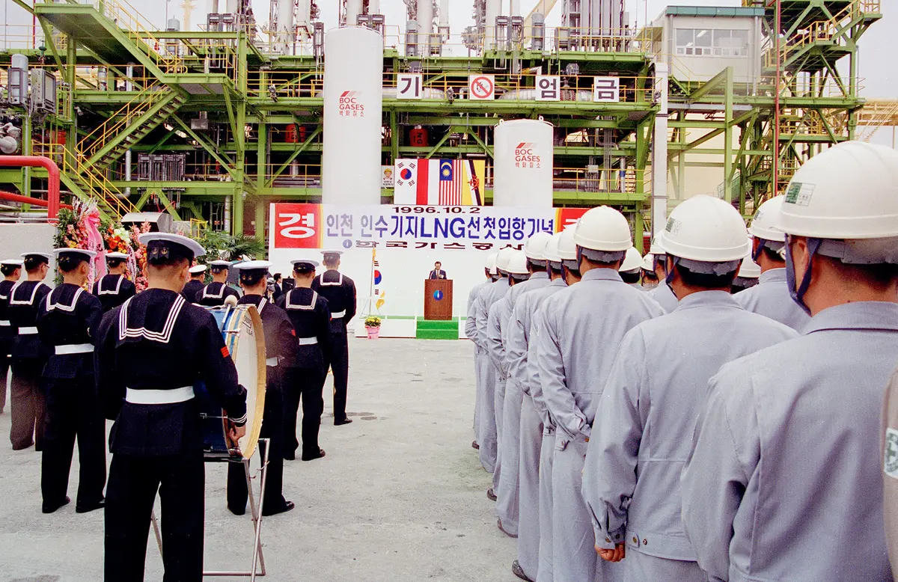
1996.10인천LNG생산기지 LNG선 최초 입항식인천기지 준공에 앞서 LNG선 SK Sovereign호의 입항식을 가졌다.- 1996.10광주지사 사옥 준공 및 현판식
- 1996.10오만산 LNG 도입계약 체결
- 1996.10인천LNG생산기지 천연가스 최초 공급
- 1996.11호남권역 천연가스 공급개시(대구 - 광주)
- 1996.12부산지역 천연가스 공급 개시
- 1996.12영남권역 천연가스 공급개시(대전 - 부산)
- 1997.01경남지사 발족(부산경남지역본부 전신)
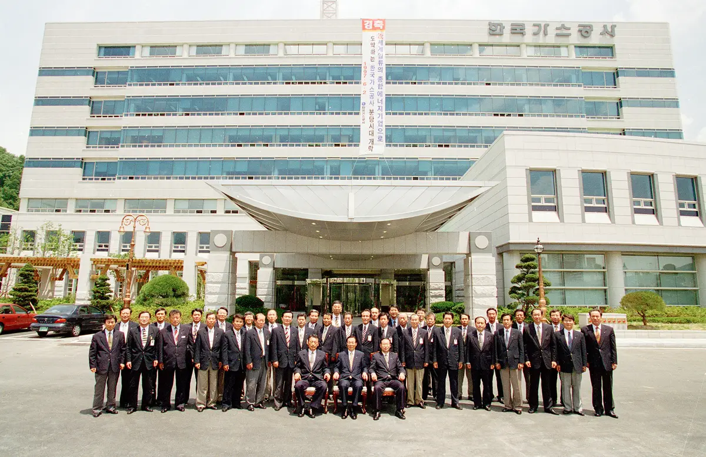
1997.06분당 신사옥 입주식6월 2일 분당 본사 사옥이 완공되고 6월 7일 입주식을 열었다.- 1997.08LNG 저장탱크용 멤브레인 제조특허 등록
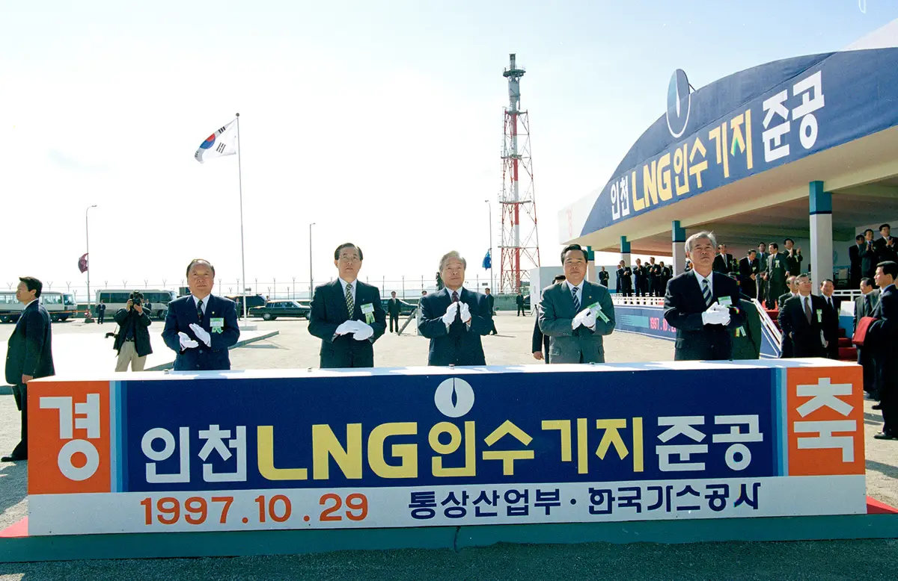
1997.10인천LNG생산기지 준공식인천 연수구 송도 매립지에서 대통령이 참석한 인천기지 준공식이 열렸다.- 1997.12천연가스 연간 판매량 1,000만 ton 돌파
- 1998.08민자발전소(인천복합화력발전소) 최초 천연가스 공급
- 1998.11인천 가스과학관 개관
- 1999.05통합정보시스템 구축 완료
- 1999.09카타르 RAS LAFFAN LNG 첫 Cargo 인수 기념식 거행
- 1999.10통영LNG생산기지 제1~3호기 탱크 및 본설비 공사 착공
- 1999.11서해권 천연가스 공급 개시
- 1999.11라스가스 가스전 및 액화플랜트 지분참여(5%) 계약 체결
- 1999.12KORAS(Korea Ras Laffan LNG Limited) 설립
- 1999.12남부권 천연가스 공급 개시
- 1999.12증권거래소 상장
- 2000.03중동지사 설립
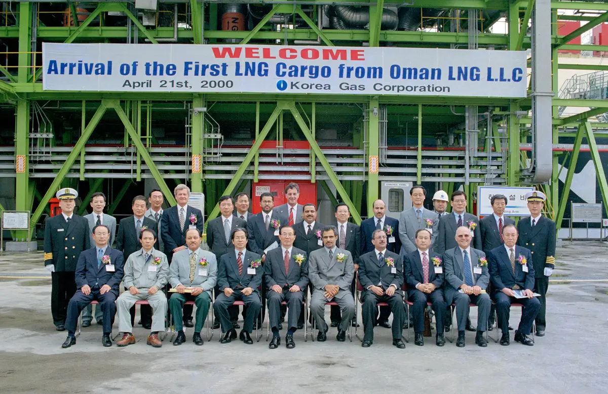
2000.04오만산 LNG 첫 입항오만산 LNG의 장기 도입을 기념하는 행사를 열었다.- 2000.05국내 최고 신용등급(AAA) 획득(국내 3대 신용평가기관)
- 2000.07인천LNG생산기지 LNG기술연구센터 개원
- 2000.09남부권 주배관 건설공사 완공
- 2000.10통영LNG생산기지 준공
- 2000.10서해권역 천연가스 공급개시(평택, 군산)
- 2000.11강원권 천연가스 공급 개시
- 2000.11남부권역 천연가스 공급개시(광주, 순천, 여수)
- 2001.03소형 가스냉난방기 기술이전협약 체결
- 2001.10연구개발원 KOLAS 국가공인교정기관 인증 획득
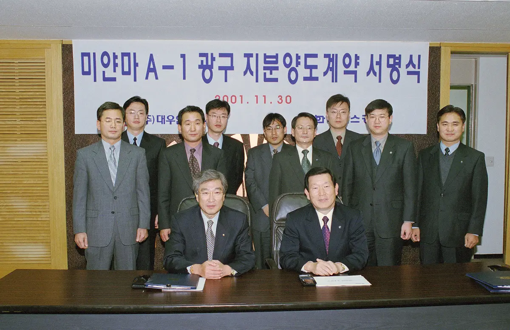
2001.11미얀마 가스전 투자유치미얀마 가스전 탐사에 지분 참여하며 상류 분야에 진출했고, 2003년 해상 탐사에서 대규모 가스를 발견했다.- 2002.04소형 가스냉난방기 상품화 개발 시연회 개최
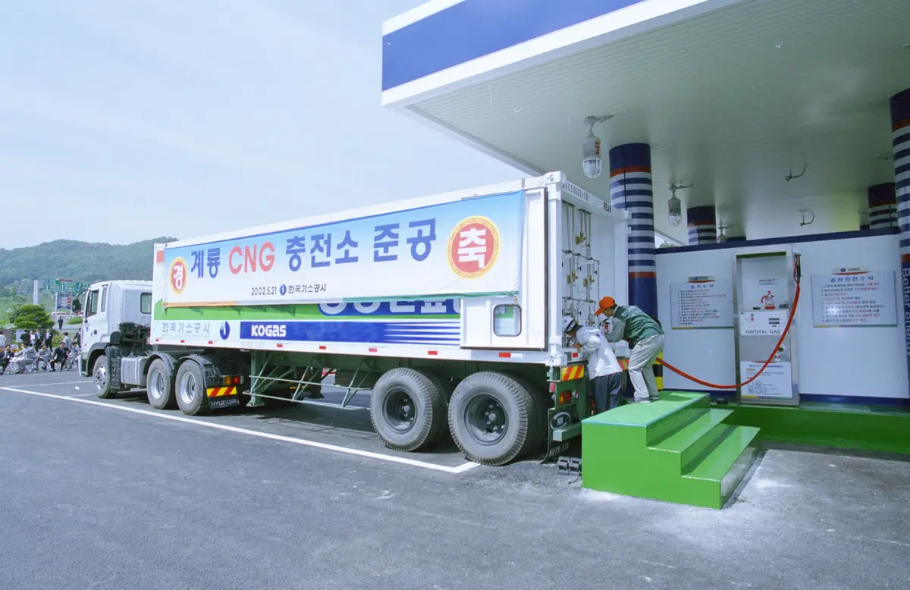
2002.05CNG충전소(계룡) 준공식국내 최초의 LNG/LCNG 복합충전소가 준공됐고, 튜브 트레일러용 고정식 CNG충전소(계룡)가 운영을 시작했다.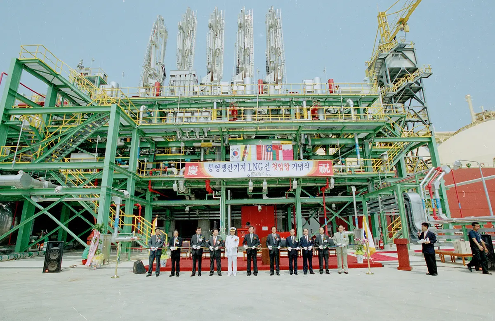
2002.09통영LNG생산기지 LNG선 첫 입항 및 천연가스 최초 공급말레이시아산 LNG를 실은 YK 소브린호가 통영기지에 처음 입항했다.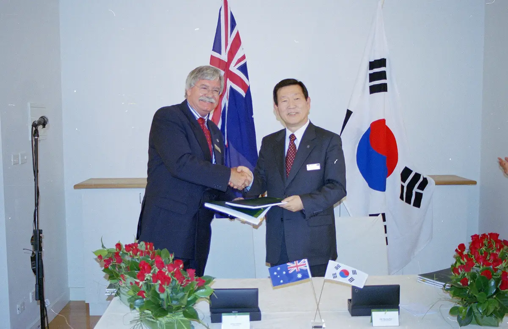
2003.03호주 ALNG사와 LNG 중기 물량 매매계약 체결호주 ALNG와 7년간(2003.4.1~2010.3.31) 연 50만 톤을 들여오는 중기계약을 맺었다.- 2003.12천연가스 수요가 1,000만 달성
2004 – 2013
세계 무대로 나아가다
이 시대의 장면 56개
- 2004.01국내 최초 LCNG 충전소 준공식
- 2004.04탱크로리에 의한 LNG 공급 시작
- 2004.06브루나이 장기계약 가격재협상 협의서 서명
- 2004.09평택생산기지 천연가스 생산 1억 ton 달성 (세계 3번째)
- 2004.10에너지업계 최초 환경성적표지 인증 취득
- 2004.11카타르·말레이시아와 LNG 단기 도입계약 체결
- 2005.03서해지사(현 전북지역본부 전신) 개소식
- 2005.05국적선 제1호 현대 유토피아호(號) 200항차 기념행사
- 2006.07예멘 YLNG 현대상사 일부지분 인수
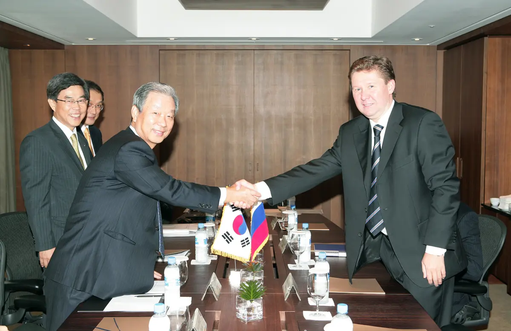
2006.10가즈프롬과 가스산업 협력 의정서 체결한·러 정부 간 가스 분야 협력협정에 따라 공사와 가즈프롬이 양국 PNG 사업의 수임기관이 됐다.- 2007.03카타르와 장기 LNG 매매계약 체결
- 2007.04공공기관의 운영에 관한 법률에 따라 ‘시장형 공기업’ 지정
- 2007.07Eni사와 7개광구 신규탐사 참여 서명식
- 2008.02태국 LNG생산기지 건설(EPC) 프로젝트 수주(한국가스공사-민간기업 공동)
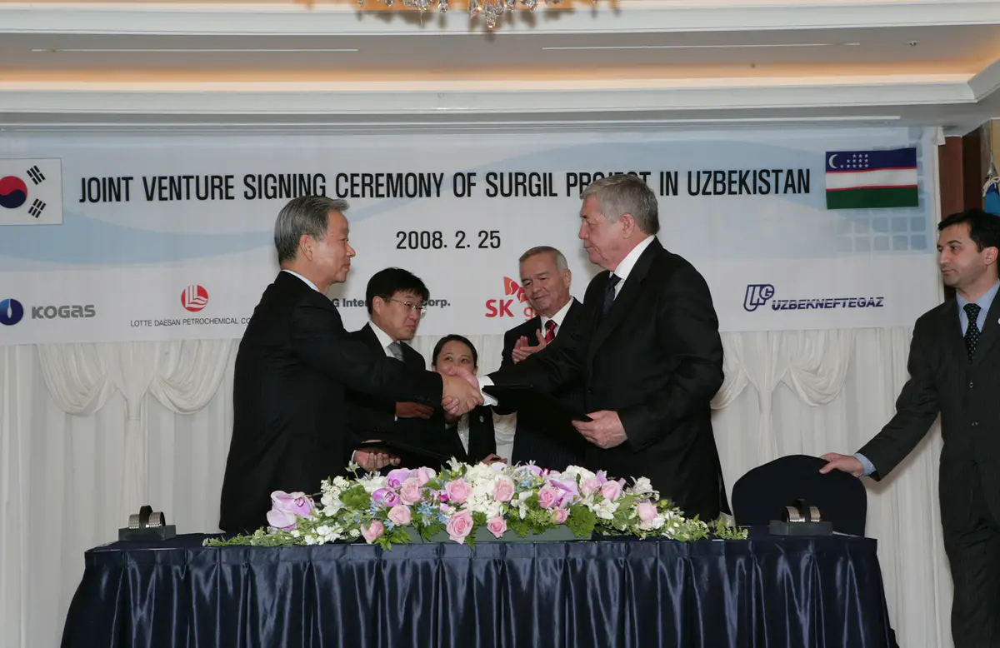
2008.02우즈베키스탄 수르길 사업 협력 투자회사 설립 협정서 체결수르길·우준쿠이 가스전 탐사는 공사가 해외 상류 부문에 직접 참여하기 시작한 사업이다.- 2008.03멕시코 LNG생산기지 건설·소유·운영사업자로 선정
- 2008.07제4 LNG생산기지 입지, 강원도 삼척 선정
- 2008.12통합정보 시스템(전사업무포털, KOSMOS) 오픈
- 2008.12인텔리전트 피그 상용화 완료
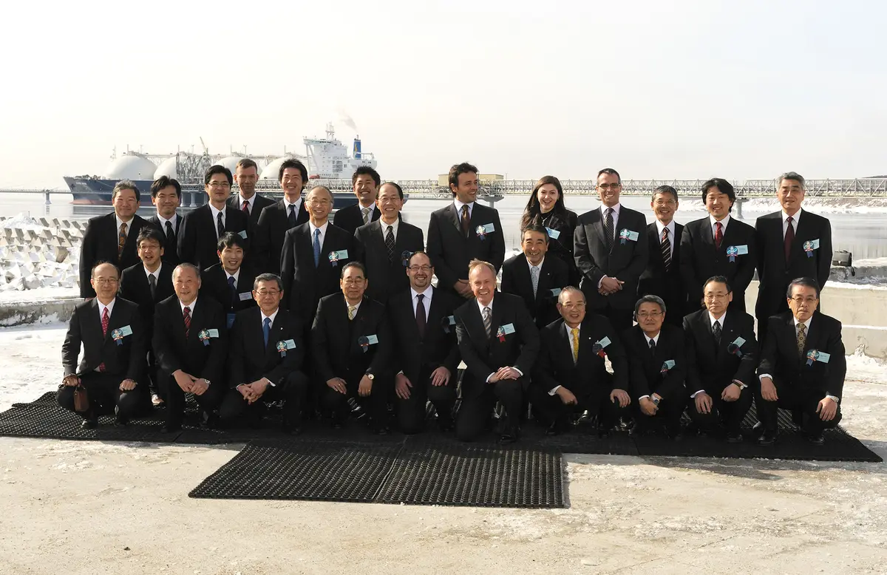
2009.02사할린-2 프로젝트 액화플랜트 준공식 참석러시아 사할린Ⅱ 천연가스 도입 계약을 맺었고, 2009년 2월 액화플랜트 준공 뒤 4월 통영기지로 처음 들여왔다.- 2009.03한국도로공사와 LNG충전소 설치 협약 체결
- 2009.04러시아산 천연가스 국내 첫 도입(사할린)
- 2009.06광양 LCNG 충전소 사업 개시
- 2009.06AMEC Partners Korea 설립
- 2009.12이라크 바드라유전 ‘낙찰자’ 선정 (30% 지분참여, 20년간 8억배럴 생산)
- 2009.12코오롱과 우즈벡 CNG 충전 사업 공동 추진
- 2010.01인천LNG생산기지 천연가스 생산 1억 ton 달성(세계 5번째)
- 2010.01이라크 주바이르 및 바드라 유·가스전 개발 및 생산권 확보
- 2010.02캐나다 가스전(키위가나, 잭파인, 노엘광구 지분 50%) 지분참여 계약 체결
- 2010.03한국형 LNG선 화물창(KC-1) 개발 완료
- 2010.10캐나다 가스전 첫 상업생산 시작(잭파인 광구)
- 2011.02호주 GLNG 프르젝트 지분 취득(15%)
- 2011.03세계 최대 LNG 저장탱크(27만kL) 개발
- 2011.06이라크 만수리야 가스전 개발계약 체결
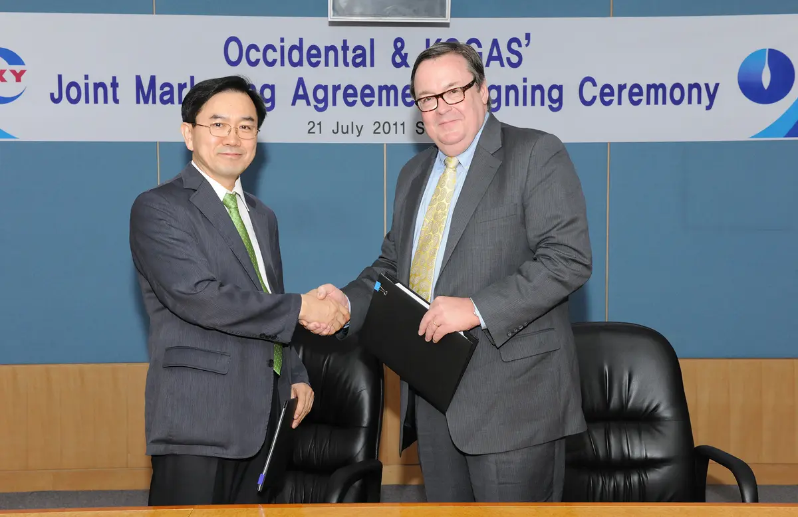
2011.07이라크 유전개발 사업 첫 원유 인수(주바이르 유전)국내 기업 가운데 유일하게 이라크 주바이르 본 사업에 참여했고, 2011년 7월 첫 물량 인수·판매 서명식을 가졌다.- 2011.10모잠비크 해상 광구, 초대형 가스전 발견(2011년 세계 2위 규모)
- 2012.01평택LNG생산기지, 가스업계 최초 무재해 23배 달성
- 2012.01아랍에미리트 LNG터미널 기술 사업 수주(Emirates LNG터미널 개발사업)
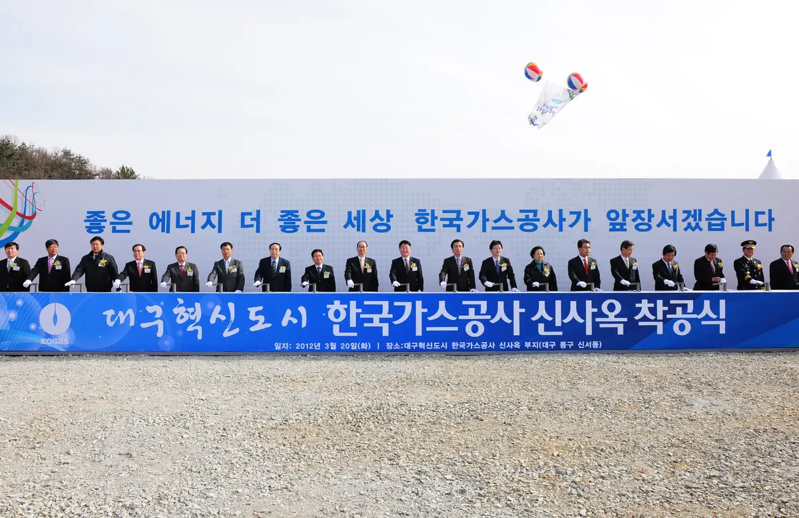
2012.03대구 신사옥 착공정부의 공기업 지방이전 정책에 따라 대구혁신도시 이전 기관 가운데 가장 먼저 신사옥 착공식을 열었다.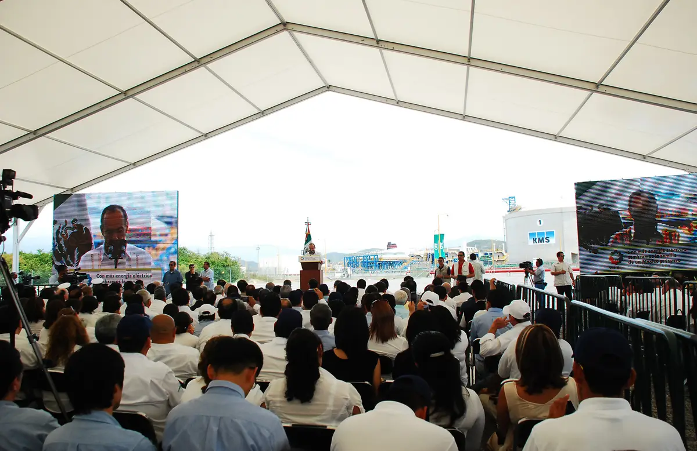
2012.03멕시코 만사니요 LNG생산기지 준공국내 기업 최초로 해외 LNG 가스플랜트를 보유·운영하는 사업으로, 설계와 공사감독 등을 맡았다.- 2012.04중국지사 개소
- 2012.05LNG 캐나다 사업 착수
- 2012.06멕시코 만사니오 LNG터미널 상업운전 개시
- 2012.06모잠비크 지사 개소
- 2012.07통영LNG생산기지 종합 준공(제17호기 탱크 상업운전)
- 2012.12해외자원개발 금탑산업훈장(모잠비크 가스전 탐사사업 성공)
- 2012.12모잠비크 도시가스사업 본격 개시(마푸토 도시가스 배관 건설 및 운영)
- 2013.01사이프러스 3개 광구 탐사 및 생산분배 계약체결
- 2013.04아시아 최초 선박용 LNG연료 공급(에코누리호)
- 2013.05삼척LNG생산기지 27만kL급 저장탱크 시항타 착수
- 2013.06인텔리전트 피그, 공사 배관 상업적용 1,000km 돌파
- 2013.09DJSI Asia Pacific Level 편입 및 가스 부문 1위 달성
- 2013.09모잠비크 Area4 광구 천연가스 추가 발견(총 97Tcf)
- 2013.10독자개발 LNG탱크 호주 기술인증 획득
- 2013.12LNG선 화물창 설계 및 LNG저장탱크 신기술 인증
- 2013.12공기업 최초 ISO 29001 품질경영시스템 인증 취득
2014 – 2016
지역과 함께 크는 회사
이 시대의 장면 16개
- 2014.02안전지킴이 배관로봇 통합과 주행시험 성공
- 2014.02공기업 고객만족도 평가 7연속 우수기관선정(기획재정부)
- 2014.03가스냉방 설치장려금 민간부문 확대 시행
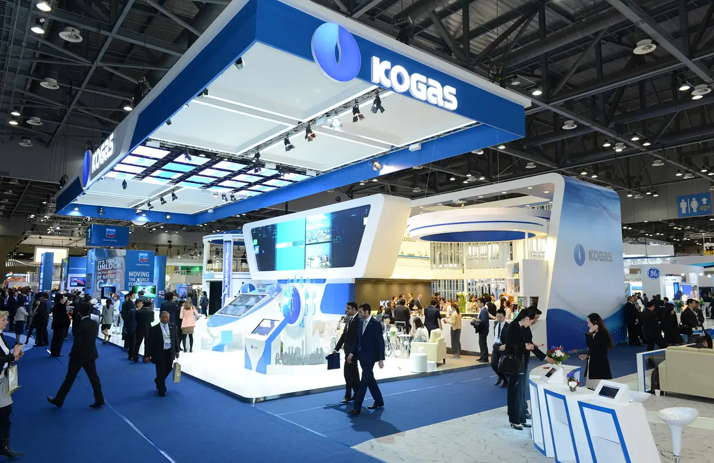
2014.03Gastech 2014 성공 개최제27회 GASTECH는 컨퍼런스와 전시회로 열려 네트워크와 사업 기회, 기술 교류의 장이 됐고, 해외 전시 기회가 적던 국내 중소기업에도 도움이 됐다.- 2014.07삼척LNG생산기지 천연가스 최초 공급
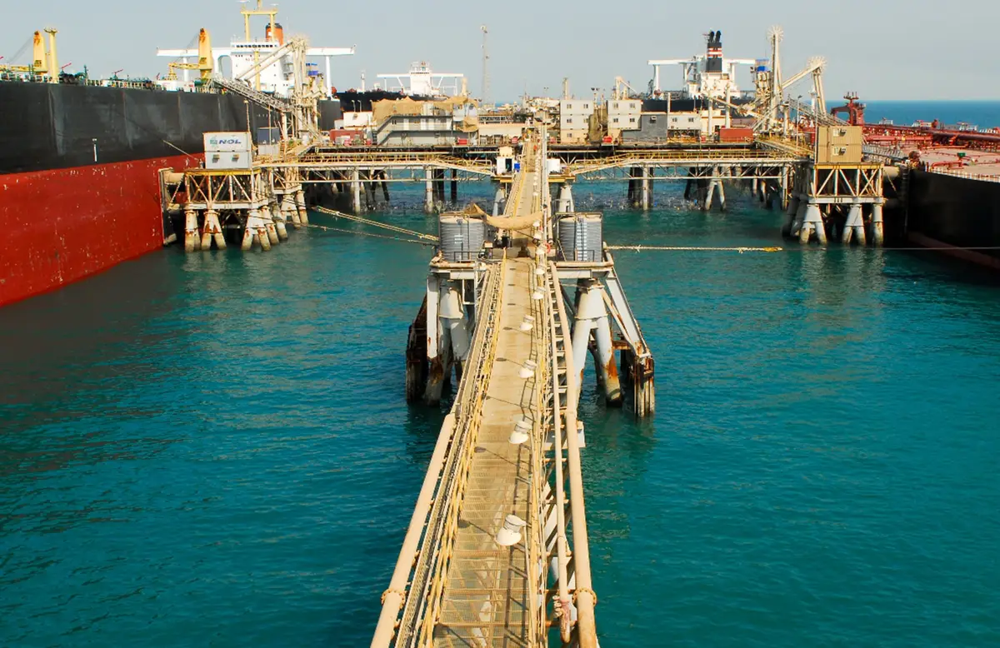
2014.08이라크 유전개발로 원유 인수·판매 1,000만 배럴 돌파공사 최초의 유전개발인 이라크 주바이르 사업이 2014년 8월 인수·판매 1,000만 배럴을 넘었다.- 2014.09자원부국 모잠비크 천연가스 배관건설공사 준공식 개최
- 2014.10WGC(World Gas Conference, 세계가스총회) 2021 유치
- 2014.11신사옥 IT센터 이전(분당 → 대구)
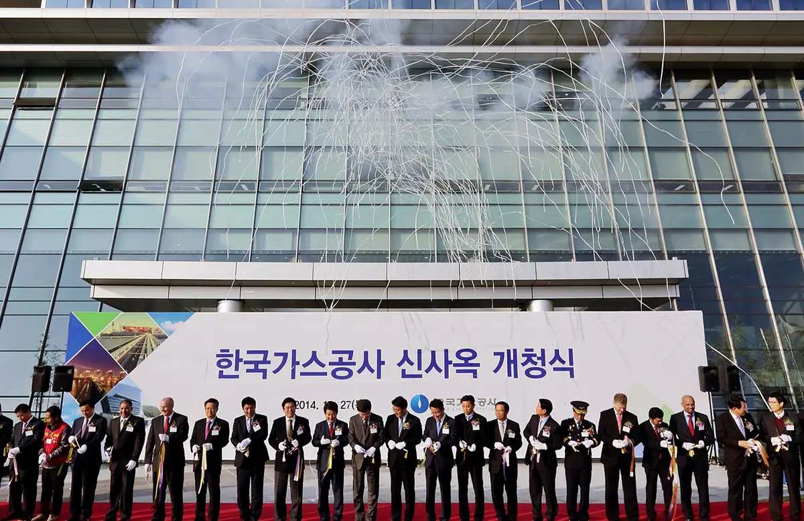
2014.11대구 신사옥 개청식 개최대구혁신도시 신사옥 개청식과 함께 본격적인 대구시대가 시작됐다.- 2015.01우주벡 이쉬티한 CNG 충전소 상업 운전 성공, 가스공급 시작
- 2015.04세계 최대 LNG 저장탱크 지분 인양 성공(삼척기지본부)
- 2015.10호주 GLNG사업 첫 LNG선 평택LNG생산기지로 입항
- 2015.12삼척LNG생산기지 1단계 건설사업 준공식 개최
- 2016.03쿠웨이트 알주르 LNG터미널 프로젝트 수주
- 2016.10모잠비크 광구 생산 LNG, BP사에 판매계약
2017 – 2019
세계 천연가스 업계의 중심으로
이 시대의 장면 17개
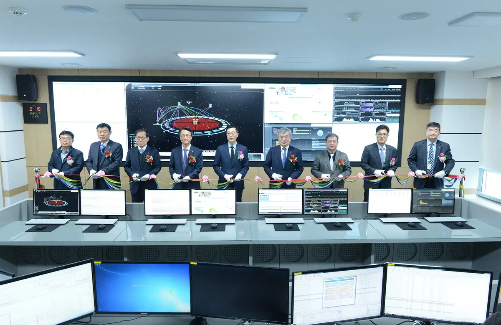
2017.02사이버관제센터 개소정보유출과 사이버 위협을 실시간 감시·대응하는 예방 중심 보안 시스템으로, 24시간 365일 운영한다.- 2017.04천연가스 관련 기술 및 규격 표준 ‘K-STAR’ 발표
- 2017.05세계 최고 수준의 LNG생산기지 운영기술 수출
- 2017.06호주 프렐류드 사업 부유식 액화천연가스 설비(FLNG) 출항
- 2017.07국내 5개 해운사와 해외 해상기지 공동진출 협약 체결 (대한해운, H-Line해운, 팬오션, 현대LNG해운, SK해운)
 2017.09삼척LNG생산기지 종합준공식 개최LNG 저장탱크 12기, 시간당 1,320톤 기화송출설비, 국내 최대 1.8km 방파제를 갖췄다.
2017.09삼척LNG생산기지 종합준공식 개최LNG 저장탱크 12기, 시간당 1,320톤 기화송출설비, 국내 최대 1.8km 방파제를 갖췄다.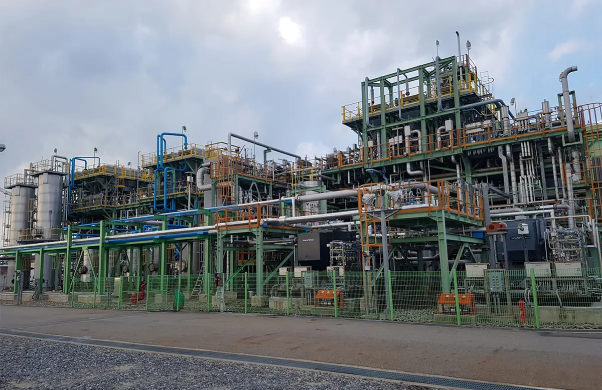
2017.11한국형 액화공정(KSMR) 시험설비 가동인천기지에서 하루 100톤의 천연가스를 액화하는 한국형 액화공정(KSMR) 연구시험설비가 가동에 들어갔다.- 2018.03제5기지 충남 당진 석문국가산업단지 최종 확정
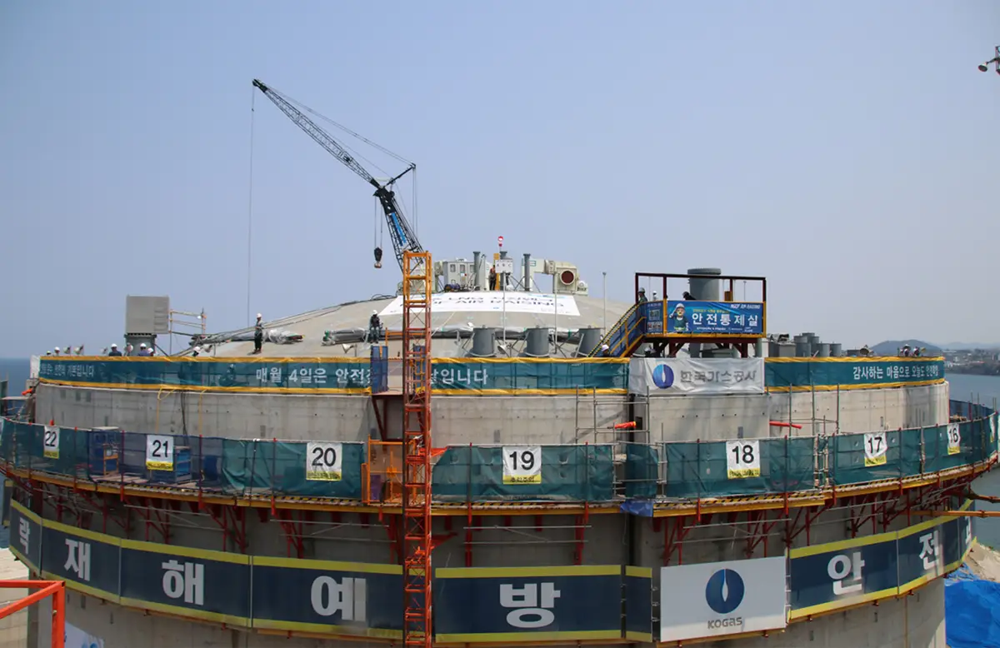
2018.04제주 LNG 저장탱크 지붕 상량식 개최제주시 애월항 제주 LNG기지에서 국내 기술로 설계·시공한 멤브레인 저장탱크의 지붕 상량식을 진행했다.- 2018.11국가보안 우수기관으로 선정, 산업통상자원부장관 표창 수상
- 2018.12인천LNG생산기지 터미널 분리 및 공정 최적화 공사 준공
- 2019.05행정안전부 주관 재난관리평가 ‘최우수 기관’ 선정(대통령 표창)
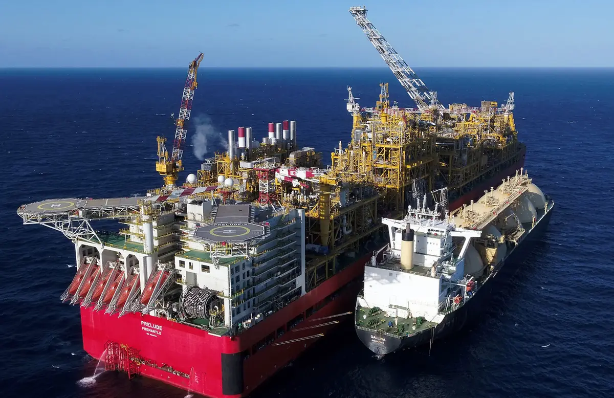
2019.06호주 프렐류드 사업 첫 LNG 생산 및 선적 완료공사가 10% 지분을 가진 호주 프렐류드 사업이 2019년 3월 컨덴세이트 판매에 이어 6월 첫 LNG 선적을 마쳤다.- 2019.07국내 공기업 최초 10년물 사회적 책임투자 채권 발행(5억 달러 규모) 기록
- 2019.10저압/저유량 배관의 장거리 검사를 위한 차세대 배관로봇 기술개발 착수
- 2019.10제주LNG본부 발전용 천연가스 최초 공급
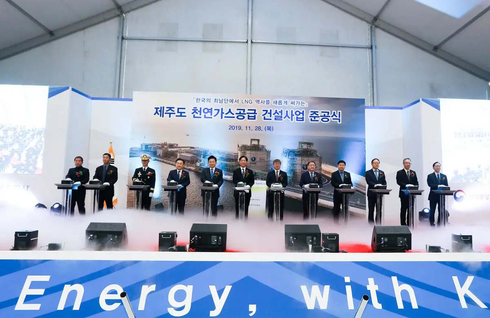
2019.11제주도LNG본부 건설사업 준공식제주도LNG본부 준공으로 천연가스 보급 33년 만에 전국 천연가스 시대가 열렸다.
2020 – 2023
새 장을 쓰는 지금
이 시대의 장면 39개
- 2020.01삼성중공업 거제조선소에서 국적 LNG 29호선 ‘SM JEJU LNG 2호’ 명명식 개최
- 2020.03대한해운과 합작법인 설립 합의서(JVA) 체결
- 2020.03제주시 관내 천연가스 본격 공급 개시
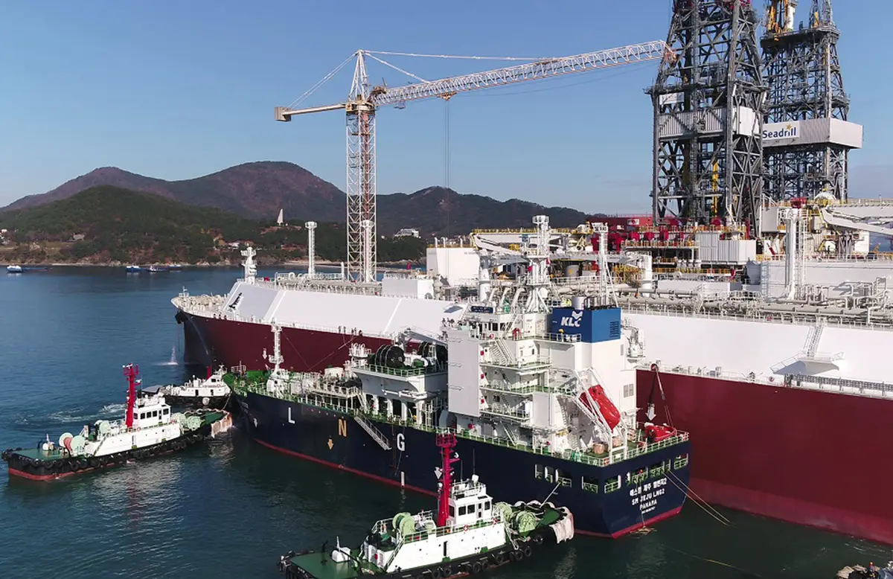
2020.11세계 최초 선박 간(STS : Ship to Ship) LNG 선적 실증 테스트 성공대우조선해양 옥포조선소에서 LNG 운반선 시운전을 위한 세계 최초의 선박 간(STS) LNG 선적 실증 테스트를 성공했다.- 2020.12한국산업기술진흥원(KIAT)과 LNG 벙커링 선박 건조 지원 사업 협약 체결
- 2021.02한국엘엔지벙커링㈜ 현대중공업과 LNG 벙커링 전용선 건조계약 체결 (국내 최초로 벙커링 전용선 통해 LNG 공급)
- 2021.05한국엘엔지벙커링, STS 방식 LNG 공급 최초 성공
- 2021.05KOGAS 디지털전환 전략 수립
- 2021.062021 대한민국 ESG 경영대상 우수기관상 수상
- 2021.07미주지사 개소 (미국 텍사스주 휴스턴 소재)
- 2021.09프로농구단 ‘페가수스’ 창단
- 2021.09EMP벨스타 등 4개사와 ‘인천신항 콜드체인 클러스터 구축·운영 SPC 설립을 위한 주주협약’ 체결
- 2021.11GS EPS와 발전용 개별요금제 천연가스 매매계약 체결
- 2021.11모잠비크에서 LNG 생산·수출 돌입, FLNG 명명식과 출항 기념식
- 2021.11모잠비크에서 LNG 생산·수출 돌입, FLNG 명명식과 출항 기념식
- 2021.123개사와 115만 ton 규모 발전용 개별요금제 천연가스 매매계약 체결
- 2022.01본사, 전국 14개 사업장, 안전보건경영시스템(KOSHA-MS) 인증 획득
- 2022.03LNG 벙커링선 케이로터스(K.Lotus)호 글로벌 에너지 기업 쉘(Shell)에 용선
- 2022.03현대이앤에프㈜(현대E&F)와 발전용 개별요금제 매매계약 체결
- 2022.04런던 BP plc사와 LNG 도입계약 체결
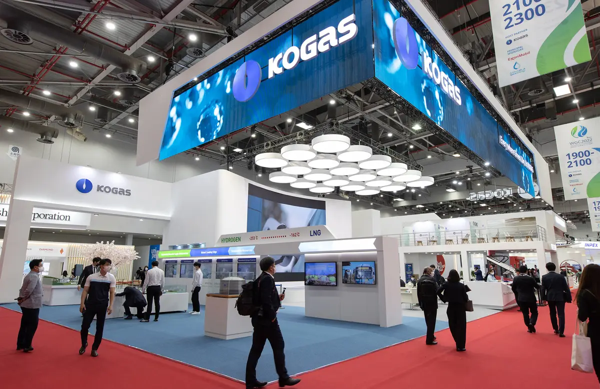
2022.05세계가스총회(WGC) 개최2022년 5월 23~27일 대구EXCO에서 80개국 460개 기업 8,800명이 참가한 세계가스총회를 열어 탄소중립, 에너지전환, 에너지 안보 등을 논의했다.- 2022.06CGN대산전력㈜과 개별요금제 공급·인수 합의서 체결
- 2022.10합작회사 ‘하이스테이션(주)’ 설립
- 2022.10LNG 발전용 개별요금제 공급물량 연 200만 ton 돌파
- 2022.122022년 정부 학자금 지원 유공 교육부 장관 표창 수상
- 2022.12제18대 최연혜 사장 취임식
- 2022.12행정안전부 공공데이터 품질관리 최우수기관 선정
- 2023.01조직·인력 효율화, 재무건전성 강화 및 컨트롤타워 확립
- 2023.01부패방지경영시스템(ISO37001) 인증 획득
 2023.01평택LNG생산기지, 세계 최초 LNG선 5,000항차 입항 달성 및 기념식평택기지에서 세계 최초로 LNG선 5,000번째 입항(현대그린피아호)을 달성해 기념식을 열었다.
2023.01평택LNG생산기지, 세계 최초 LNG선 5,000항차 입항 달성 및 기념식평택기지에서 세계 최초로 LNG선 5,000번째 입항(현대그린피아호)을 달성해 기념식을 열었다.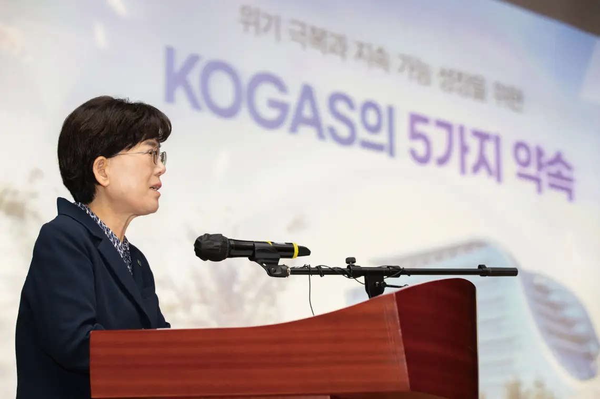
2023.03위기극복과 지속가능 성장을 위한 ‘KOGAS의 5가지 약속’ 발표2023년 3월 ‘KOGAS의 5가지 약속’을 발표하고 5대 역점 경영과제를 추진하고 있다.- 2023.03정기 주주총회서 무배당 확정
- 2023.04일본 JERA와 LNG 분야 협력 확대
- 2023.04한전KDN과 스마트 안전 기술 업무협약 체결
- 2023.04환상망 및 서부발전 전용배관시설 공동 구축을 위한 업무협약 체결
- 2023.042023 LNG생산기지 종합개선 워크숍 개최
- 2023.05한국엘엔지벙커링㈜, LNG 벙커링 전용선(BLUE WHALE) 명명식 개최
- 2023.05글로벌 ESG 경영대상 환경 분야 우수기관상 수상
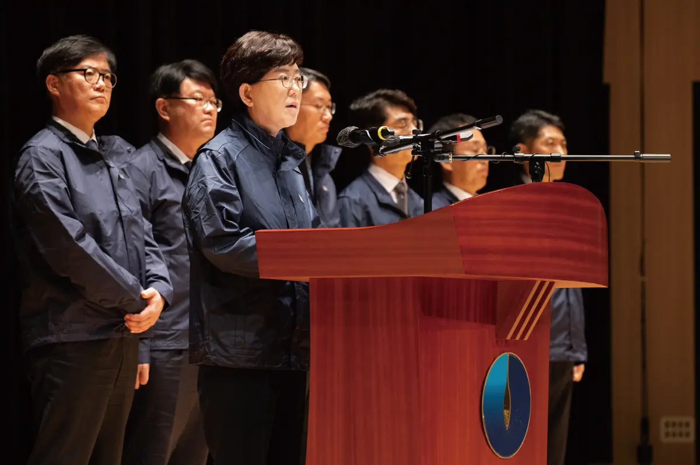
2023.05비상경영체제 선포2023년 5월 난방비 부담을 줄이면서 재무 위기를 넘기기 위한 비상경영체제를 선포했다.